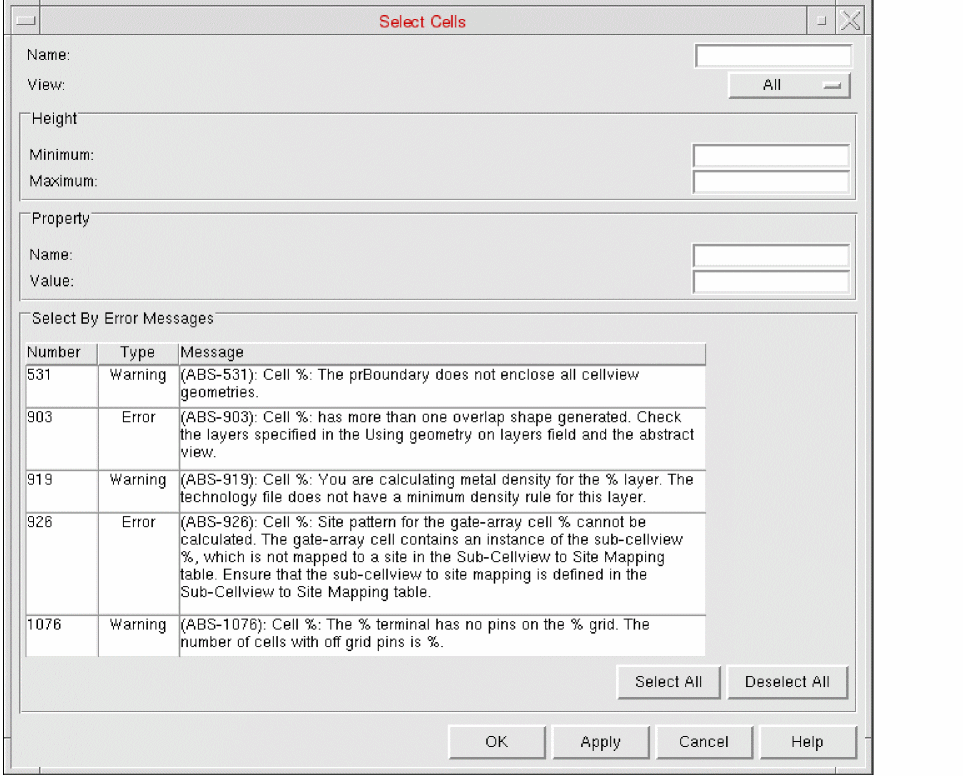

Selecting Cells Based on a Criteria in Abstract Generator
The Select Cells form allows you to selects one or more cells using a variety of selection criteria.
-
Choose Cells – Select to start this command.
This displays the Select Cells form.
 - Select Name to enter a regular expression that is included in the cell names you want to select. All matching cells are selected, irrespective of the View set.
- Select View to choose the view you are interested in. Only cells that have the specified View present and match any subsequent Height, Property or Status criteria are selected.
- Select Height to specify minimum or maximum cell heights, or a range within which the cell height must fall.
- In Property, enter a system or user-defined cell property and a value for the cells you want to select.
-
Use Select By Error Messages to select one or more of the error messages listed in the table to select cells in a library. Only cells that have had a specific, selected error message applied to them will be filtered through in the selection procedure.
The figure shown above displays a list of error messages based on which you can select cells. - Click OK to select the cells matching the criteria and close the form, or use the Apply button to perform incremental selection without closing the form.
Selecting All Cells
The Cells – Select All command selects all cells displayed in the Cell pane. Clicking the table header of the Cell pane also selects all the cells.
This function does not select cells in bins that are not selected.
Deselecting All Cells
When you click Cells – Deselect All, no cell in the cells pane is selected.
Related Topics
Return to top